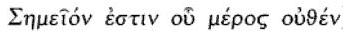
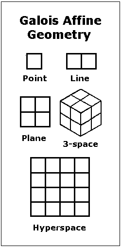
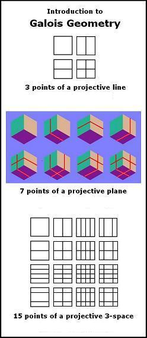

by Steven H. Cullinane,
April 22, 2010

Stanford Encyclopedia of Philosophy —
"Mereology (from the Greek μερος, ‘part’) is the theory of parthood relations: of the relations of part to whole and the relations of part to part within a whole. Its roots can be traced back to the early days of philosophy, beginning with the Presocratics…."
A non-Euclidean*
approach to parts–

(See also some related literary
remarks.)
Corresponding non-Euclidean*
projective points –

Richard J. Trudeau in The Non-Euclidean Revolution, chapter on "Geometry and the Diamond Theory of Truth"–
"… Plato and Kant, and most of the philosophers and scientists in the 2200-year interval between them, did share the following general presumptions:
(1) Diamonds– informative, certain truths
about the world– exist.
(2) The theorems of Euclidean geometry are diamonds.
Presumption (1) is what I referred to earlier as the 'Diamond Theory' of truth. It is far, far older than deductive geometry."
Trudeau's book was published in 1987. The non-Euclidean* figures above illustrate concepts from a 1976 monograph, also called "Diamond Theory."
Although non-Euclidean,* the theorems of the 1976 "Diamond Theory" are also, in Trudeau's terminology, diamonds.
* "Non-Euclidean" here means merely "other than Euclidean." No violation of Euclid's parallel postulate is implied.